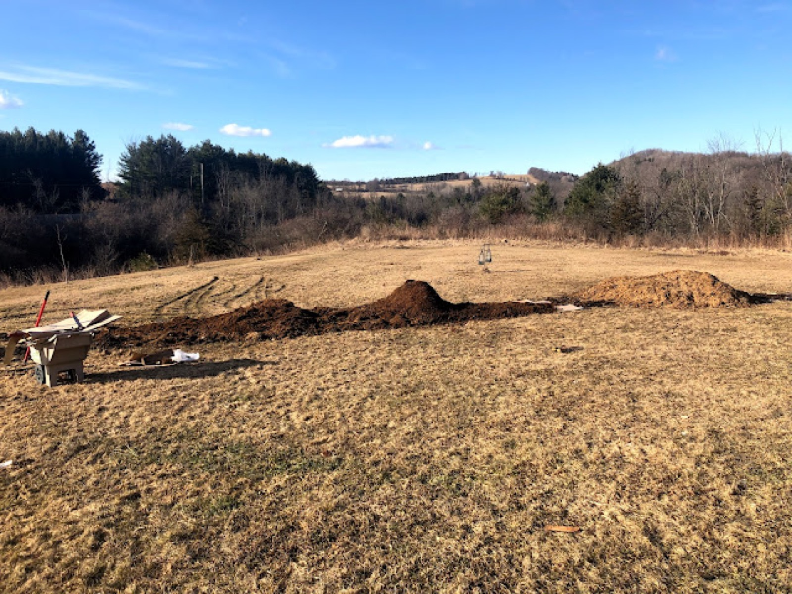
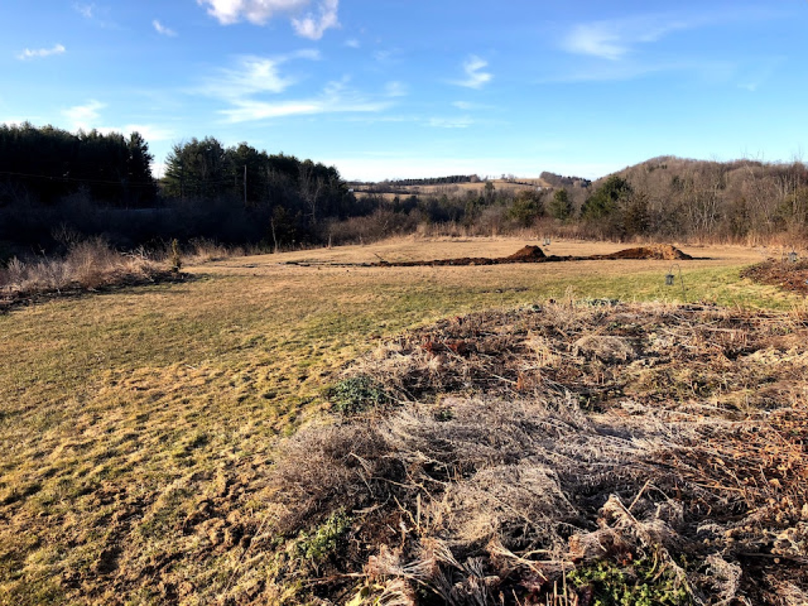

March 2020
Going Native
Native plants provide essential food for pollinators and wildlife. There are a number of statistics out there pointing to the decline of all pollinators and the likelihood of losing nearly one million species in the next few decades.
Planting for pollinators is essential. We all must work together to save our native bees, butterflies, birds, bats, and all of the species that serve as a foundation for our food system. The urgency of this is clear and we must now take dramatic actions to support our environment.
Gardens can make a difference, our reduction in lawn and increase in growing native plants support wildlife (of all shapes and sizes) in lieu of having enough habitat for food and shelter. Our gardens are the safe havens, an eden for what is left.
Expansion of the native plant garden in my own yard has begun. Included in the mass planting are eight varieties of threatened and endangered species of plants. I’ve put energy into a form of lasagna mulching, layers of manure, compost, mulch, and cardboard (for weed suppression.)


If you plant natives, the pollinators will come.
Filed in the garden journal · March 2020